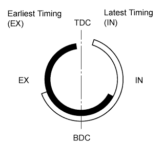
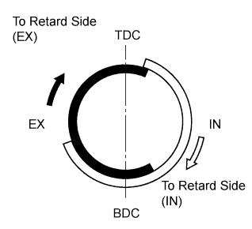
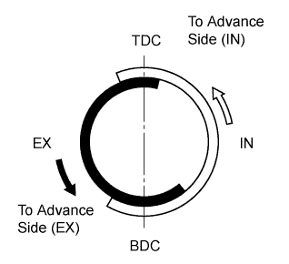
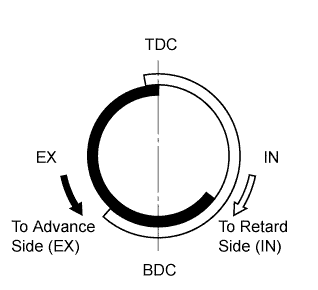
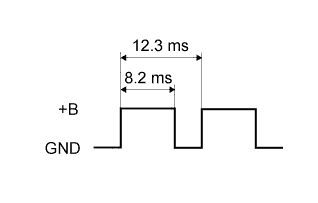
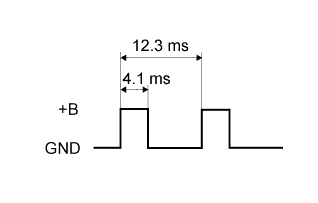

SFI SYSTEM > DETAILS |
| FUNCTION OF MAIN COMPONENTS |
The main components of the engine control system are as follows:
| Component | Outline | Quantity | Function |
| ECM | 32-bit CPU | 1 | The ECM optimally controls the SFI, ESA and ISC to suit the operating conditions of the engine in accordance with the signals provided by the sensors. |
| Mass Air Flow Meter | Hot-wire Type | 1 | This sensor has a built-in hot-wire to directly detect the intake air mass. |
| Intake Air Temperature Sensor | Thermistor Type | 1 | This sensor detects the intake air temperature by means of an internal thermistor. |
| Engine Coolant Temperature Sensor | Thermistor Type | 1 | This sensor detects the engine coolant temperature by means of an internal thermistor. |
| Crankshaft Position Sensor [Rotor Teeth] | Magnetic Resistance Element (MRE) Type [36 - 2] | 1 | This sensor detects the engine speed and performs cylinder identification. |
| Camshaft Position Sensor [Rotor Teeth] | Magnetic Resistance Element (MRE) Type [3] | 1 | This sensor detects the camshaft position and performs the cylinder identification. |
| VVT Sensor for Intake [Rotor Teeth] | Magnetic Resistance Element (MRE) Type [3] | 2 (1 on each bank) | This sensor detects the actual valve timing. |
| VVT Sensor for Exhaust [Rotor Teeth] | Magnetic Resistance Element (MRE) Type [3] | 2 (1 on each bank) | This sensor detects the actual valve timing. |
| Accelerator Pedal Position Sensor | Linear (Non-contact) Type | 1 | This sensor detects the amount of pedal effort applied to the accelerator pedal. |
| Throttle Position Sensor | Linear (Non-contact) Type | 1 | This sensor detects the throttle valve opening angle. |
| Knock Control Sensor (Bank 1 and Bank 2) | Built-in Piezoelectric Type (Non-resonant Type/ Flat Type) | 4 (2 on each bank) | This sensor detects an occurrence of engine knocking indirectly from the vibration of the cylinder block caused by the occurrence of engine knocking. |
| Air Fuel Ratio Sensor | Heated Type (Planar Type) | 2 (1 on each bank) | As with the oxygen sensor, this sensor detects the oxygen concentration in the exhaust emissions. However, it detects the oxygen concentration in the exhaust emissions linearly. |
| Oxygen Sensor | Heated Type (Cup Type) | 2 (1 on each bank) | This sensor detects the oxygen concentration in the exhaust emissions by measuring the electromotive force which is generated in the sensor itself. |
| Fuel Injector Assembly | 12-hole Type | 8 | The fuel injector assembly is an electromagnetically-operated nozzle which injects fuel in accordance with signals from the ECM. |
| SYSTEM CONTROL |
The engine control system has the following features. The ECM controls these systems:
| System | Outline |
| Sequential Multiport Fuel Injection (SFI) |
|
| Electronic Spark Advance (ESA) |
|
| Electronic Throttle Control System-intelligent (ETCS-i) | Optimally controls the throttle valve opening in accordance with the amount of accelerator pedal effort and the condition of the engine and the vehicle. |
| Dual Variable Valve Timing-intelligent (Dual VVT-i) | Controls the intake and exhaust camshafts to optimal valve timing in accordance with the engine operating conditions. |
| Acoustic Control Induction System (ACIS) | The intake air passages are switched based on engine speed and throttle valve opening angle to provide high performance in all engine speed ranges. |
| Fuel Pump Control |
|
| Air Conditioning Cut-off Control | By turning the air conditioning compressor on or off in accordance with the engine conditions, driveability is maintained. |
| Starter Control | Once the engine switch is pushed, this control continues to operate the starter until the engine has started. |
| Air Fuel Ratio Sensor and Oxygen Sensor Heater Control | Maintains the temperature of the air fuel ratio sensors or oxygen sensors at an appropriate level to increase the detection accuracy of the exhaust gas oxygen concentration. |
| Engine Immobiliser | Prohibits fuel delivery and ignition if an attempt is made to start the engine with an invalid key. |
| Diagnosis | When the ECM detects a malfunction, the ECM diagnoses and memorizes the failed section. |
| Fail-safe | When the ECM detects a malfunction, the ECM stops or controls the engine in accordance with the data already stored in memory. |
| FUNCTION |
Dual VVT-i System
The Dual Variable Valve Timing-intelligent (VVT-i) system is designed to control the intake and exhaust camshaft within a range of 40° and 32° respectively (of crankshaft angle) to provide valve timing that is optimally suited to the engine operating conditions. This improves torque in all the speed ranges as well as increasing fuel economy, and reducing exhaust emissions.
| *1 | Camshaft Timing Oil Control Valve Assembly (Bank 2, Exhaust) | *2 | Camshaft Timing Oil Control Valve Assembly (Bank 2, Intake) |
| *3 | VVT Sensor (Bank 2, Exhaust) | *4 | VVT Sensor (Bank 2, Intake) |
| *5 | Camshaft Position Sensor | *6 | VVT Sensor (Bank 1, Intake) |
| *7 | VVT Sensor (Bank 1, Exhaust) | *8 | Crankshaft Position Sensor |
| *9 | Camshaft Timing Oil Control Valve Assembly (Bank 1, Exhaust) | *10 | Camshaft Timing Oil Control Valve Assembly (Bank 1, Intake) |
| *11 | Engine Coolant Temperature Sensor | *12 | ECM |
| *13 | Mass Air Flow Meter | *14 | Throttle Position Sensor |
| *15 | Vehicle Speed Signal | - | - |
The VVT-i system delivers excellent benefits in the different operating conditions as shown in the table below:
| Operation State | Objective | Effect | |
| During Idling |  | Eliminating overlap to reduce blow back to the intake side. |
|
| In Low Speed Range with Light to Medium Load |  | Retarding the intake valve close timing and reducing pumping loss. Increasing overlap and internal EGR. |
|
| In Low to Medium Speed Range with Heavy Load |  | Advancing the intake valve close timing, reducing intake air blow back to the intake side, and improving volumetric efficiency. | Improved torque in low to medium speed range |
| In High Speed Range with Heavy Load |  | Retarding the intake valve close timing and improving volumetric efficiency using the inertia force of the intake air. | Improved output |
| At Low Temperatures |
|
| |
| Controlling valve timing and fixing it to the optimal timing for engine start. | Improved startability | |
ACIS
The ACIS is implemented by using a bulkhead to divide the intake manifold into 2 stages, with an intake air control valve in the bulkhead being opened and closed to vary the effective length of the intake manifold in accordance with the engine speed and throttle valve opening angle. This increases the power output in all ranges from low to high speed.
| *1 | Intake Air Control Valve | *2 | ACIS Actuator |
| *3 | VSV (for ACIS) | *4 | Throttle Position Sensor |
| *5 | Crankshaft Position Sensor | *6 | ECM |
ETCS-i
The ETCS-i is used, providing excellent throttle control in all the operating ranges. The accelerator cable has been discontinued, and an accelerator pedal position sensor has been provided on the accelerator pedal.
In the conventional throttle body, the throttle valve opening is determined by amount of accelerator pedal effort. In contrast, the ETCS-i uses the ECM to calculate the optimal throttle valve opening that is appropriate for the respective driving condition and uses a throttle control motor to control the opening.
The ETCS-i controls the idle speed, Traction Control (TRC), Vehicle Stability Control (VSC), cruise control system and dynamic radar cruise control system*.
In case of an abnormal condition, this system switches to the limp mode.
Fuel Pump Control
The fuel pump is controlled by the fuel pump control ECU based on signals from the ECM. The fuel pump control has a fuel cut control. The fuel cut control stops the fuel pump when any of the Supplemental Restraint System (SRS) airbags have deployed.
Starter Control
Once the engine switch is pressed, this function operates the starter until the engine starts, provided that the brake pedal is depressed.
This prevents application of the starter for an inadequate length of time and also prevents the engine from being cranked after it has started.
Air Fuel Ratio Sensor and Oxygen Sensor
A planar type air fuel ratio sensor and a cup type oxygen sensor are used. The basic construction of the oxygen sensor and the air fuel ratio sensor is the same. However, they are divided into the cup type and the planar type, in accordance with the different types of heater construction used.
The planar type air fuel ratio sensor uses alumina, which excels in heat conductivity and electrical insulation, to integrate the sensor element with a heater, thus improving the warmup performance of the sensor.
The cup type oxygen sensor contains a sensor element that surrounds the heater.
| *A | Planar Type Air Fuel Ratio Sensor | *B | Cup Type Oxygen Sensor |
| *1 | Diffusion Resistance Layer | *2 | Alumina |
| *3 | Atmosphere | *4 | Heater |
| *5 | Platinum Electrode | *6 | Sensor Element (Zirconia) |
As illustrated below, the conventional oxygen sensor is characterized by a sudden change in its output voltage at the threshold of the stoichiometric air fuel ratio (14.7:1). In contrast, the air fuel ratio sensor data is approximately proportionate to the existing air fuel ratio. The air fuel ratio sensor converts the oxygen density to current and sends it to the ECM. As a result, the detection precision of the air fuel ratio has been improved. The air fuel ratio sensor data can be viewed using an intelligent tester II.
Mass Air Flow Meter
This mass air flow meter, which is a slot-in type, allows a portion of the intake air to flow through the detection area. By directly measuring the mass and the flow rate of the intake air, the detection precision is improved and the intake air resistance is reduced.
This mass air flow meter has a built-in intake air temperature sensor.
| *1 | Intake Air Temperature Sensor | - | - |
 | Air Flow | - | - |
Crankshaft Position, Camshaft Position and VVT Sensors
Magnetic Resistance Element (MRE) sensors are used for the crankshaft position, camshaft position, and VVT sensors.
The timing rotor for the crankshaft position sensor is installed on the back end of the crankshaft. The timing rotor has 34 teeth, with 2 teeth missing, at 10° intervals. Based on these teeth, the crankshaft position sensor transmits crankshaft position signals (NE signal) consisting of 33 high and low output pulses every 10° per revolution of the crankshaft, and 1 high and low output pulse every 30°. The ECM uses the NE signal for detecting the crankshaft position as well as for detecting the engine speed. It uses the missing teeth signal to determine the top dead center.
The camshaft position sensor uses a timing rotor installed on the front end of the intake camshaft sprocket of the left bank. Based on the timing rotor, the sensor outputs camshaft position signals (G2 signal) consisting of 3 (3 high output, 3 low output) pulses for every 2 revolutions of the crankshaft. The ECM compares the G2 and NE signals to detect the camshaft position and identify the cylinder.
The VVT sensors (intake and exhaust) use timing rotors installed on the intake and exhaust camshafts of each bank. Based on the timing rotors, the sensors output VVT position signals consisting of 3 (3 high output, 3 low output) pulses for every 2 revolutions of the crankshaft. The ECM compares these VVT position signals and the NE signal to detect the actual valve timing.
| *1 | Camshaft Position Sensor | *2 | Timing Rotor |
| *3 | VVT Sensor (Intake, Bank 1) | *4 | VVT Sensor (Exhaust, Bank 1) |
| *5 | Crankshaft Position Sensor | - | - |
The MRE type sensor consists of an MRE, a magnet and a sensor.
The direction of the magnetic field changes due to the profile (protruding and non-protruding portions) of the timing rotor, which passes by the sensor. As a result, the resistance of the MRE changes, and the output voltage to the ECM changes to high or low. The ECM detects the crankshaft and camshaft positions based on this output voltage.
The differences between the MRE type sensor and the pick-up coil type sensor used on the conventional models are as follows:
Knock Control Sensor (Flat Type)
In a conventional knock control sensor (resonant type), a vibration plate is built into the sensor. This plate has the same resonance point as the knocking* frequency of the engine block. This sensor can only detect vibration in this frequency band.
A flat type knock control sensor (non-resonant type) has the ability to detect vibration in a wider frequency band (from approximately 6 kHz to 15 kHz). It has the following features:
A flat type knock control sensor is installed in an engine by placing it over the stud bolt installed on the cylinder block. For this reason, a hole for the stud bolt exists in the center of the sensor.
In the sensor, a steel weight is located in the upper portion. An insulator is located between the weight and the piezoelectric element.
An open/short circuit detection resistor is integrated in the sensor. When the engine switch is on (IG), the open/short circuit detection resistor in the knock control sensor and the resistor in the ECM keep the voltage at terminal KNK1 constant. An Integrated Circuit (IC) in the ECM constantly monitors the voltage of terminal KNK1. If the open/short circuit occurs between the knock control sensor and the ECM, the voltage of terminal KNK1 will change and the ECM will detect the open/short circuit and store a Diagnostic Trouble Code (DTC).
Vibrations caused by knocking are transmitted to the steel weight. The inertia of this weight applies pressure to the piezoelectric element. This action generates electromotive force.
| *1 | Steel Weight | *2 | Inertia |
| *3 | Piezoelectric Element | - | - |
Throttle Position Sensor
A non-contact type throttle position sensor is used. This sensor uses a Hall IC, which is mounted on the throttle body.
The Hall IC is surrounded by a magnetic yoke. The Hall IC converts the changes that occur in the magnetic flux into electrical signals and outputs them as throttle valve effort to the ECM.
The Hall IC contains circuits for the main and sub signals. It converts the throttle valve opening angles into electric signals with two differing characteristics and outputs them to the ECM.
Accelerator Pedal Position Sensor
This non-contact type accelerator pedal position sensor uses a Hall IC, which is mounted on the accelerator pedal arm.
A magnetic yoke is mounted at the base of the accelerator pedal arm. This yoke rotates around the Hall IC in accordance with the amount of effort that is applied to the accelerator pedal. The Hall IC converts the changes in the magnetic flux that occur into electrical signals, and outputs them in the form of accelerator pedal position signals to the ECM.
This accelerator pedal position sensor includes 2 Hall ICs and circuits for the main and sub signals. It converts the accelerator pedal depressed angles into electric signals with two differing characteristics and outputs them to the ECM.
Camshaft Timing Oil Control Valve
This camshaft timing oil control valve controls the spool valve using duty cycle control from the ECM. This allows hydraulic pressure to be applied to the VVT-i controller advanced or retarded side. When the engine is stopped, the camshaft timing oil control valve assembly is in the most retarded position.
| *1 | Sleeve | *2 | Spring |
| *3 | Spool Valve | - | - |
| *a | To VVT-i Controller (Advance Side) | *b | To VVT-i Controller (Retard Side) |
| *c | Drain | *d | Oil Pressure |
| *e | On the camshaft timing oil control valve (exhaust), the advance and retard sides are reversed. | - | - |
Throttle Control Motor
A DC motor with excellent response and minimal power consumption is used for the throttle control motor. The ECM performs the duty cycle control of the direction and the amperage of the current that flows to the throttle control motor in order to regulate the opening of the throttle valve.
| *1 | Throttle Valve | *2 | Throttle Position Sensor Portion |
| *3 | Throttle Control Motor | - | - |
Ignition Coil Assembly
The Direct Ignition System (DIS) provides 8 ignition coil assemblies, one for each cylinder. The spark plug caps, which provide contact to spark plugs, are integrated with the ignition coil. Also, an igniter is enclosed to simplify the system.
| *1 | Igniter | *2 | Iron Core |
| *3 | Plug Cap | *4 | Secondary Coil |
| *5 | Primary Coil | - | - |
| *a | Ignition Coil Cross Section | - | - |
Spark Plug
Long-reach type spark plugs are used. This type of spark plug allows the area of the cylinder head that receives the spark plugs to be made thick. Thus, the water jacket can be extended near the combustion chamber, which contributes to cooling performance.
Iridium-tipped spark plugs are used to achieve a 192000 km (120000 miles) maintenance interval. By making the center electrode of iridium, it is possible to achieve superior ignition performance and durability compared to platinum-tipped spark plugs.
| *1 | Iridium Tip | *2 | Platinum Tip |
| *3 | Water Jacket | - | - |
| *a | Long-reach | - | - |
| OPERATION |
Dual VVT-i System
Using the engine speed, intake air mass, throttle position and engine coolant temperature, the ECM can calculate optimal valve timing for each driving condition and controls the camshaft timing oil control valve. In addition, the ECM uses signals from the camshaft position sensor and the crankshaft position sensor to detect the actual valve timing, thus providing feedback control to achieve the target valve timing.
When the camshaft timing oil control valve is positioned as illustrated below by the advance signals from the ECM, the resultant oil pressure is applied to the timing advance side vane chamber to rotate the camshaft in the timing advance direction:
| *1 | Vane | *2 | Rotation Direction |
| *3 | ECM | *4 | In (Oil Pressure) |
| *5 | Drain (Oil Pressure) | - | - |
| *a | Advance Side Operation Intake Side | *b | Advance Side Operation Exhaust Side |
When the camshaft timing oil control valve is positioned as illustrated below by the retard signals from the ECM, the resultant oil pressure is applied to the timing retard side vane chamber to rotate the camshaft in the timing retard direction:
| *1 | Rotation Direction | *2 | Vane |
| *3 | ECM | *4 | Drain (Oil Pressure) |
| *5 | In (Oil Pressure) | - | - |
| *a | Retard Side Operation Intake Side | *b | Retard Side Operation Exhaust Side |
After reaching the target timing, the engine valve timing is maintained by keeping the camshaft timing oil control valve in the neutral position unless the engine operating conditions change. This maintains the engine valve timing at the desired target position by preventing the engine oil from running out of the oil control valve.
ACIS
The ECM activates the VSV so that the negative pressure acts on the diaphragm chamber of the actuator. This closes the control valve to match the longer pulsation cycle. As a result, the effective length of the intake manifold is lengthened and the intake efficiency in the low-to-medium engine speed range under heavy load and low-to-high engine speed range under low load is improved due to the dynamic effect of the intake air, thereby increasing the power output.
The ECM deactivates the VSV so that atmospheric air is led into the diaphragm chamber of the actuator. This opens the control valve to match the shorter pulsation cycle. When the control valve is open, the effective length of the intake manifold is shortened and peak intake efficiency is shifted. This benefits the high engine speed range under heavy load, thus providing greater output at high engine speeds.
Fuel Pump Control
In this vehicle, there are 2 types of fuel pump controls. The fuel pump is controlled to an optimum speed to match the engine operating conditions, and the fuel pump operation is stopped when the SRS airbags deploy.
The ECM transmits a fuel pump operation request signal to the fuel pump control ECU that corresponds to the engine operating conditions. The fuel pump control ECU receives this request signal and controls the speed of the fuel pump in 3 stages. As a result, under light engine loads, fuel pump speed is kept low to reduce electric power loss.
A fuel cut control is used to stop the fuel pump when any of the SRS airbags deploy. In this control, if an airbag deployment signal from the center airbag sensor assembly is detected by the ECM, the ECM will turn off the circuit opening relay. As a result, the power supply to the fuel pump control ECU is stopped, causing the fuel pump to stop operating. After the fuel cut control has been activated, turning the engine switch from off to on (IG) cancels the fuel cut control, and the engine can be restarted.
The fuel pump control ECU controls fuel pump speed by receiving a duty cycle signal (FPC terminal input) from the ECM, and control is performed in 3 stages.
The fuel pump control ECU also detects failures in the input and output circuits at the fuel pump ECU and transmits the failure status to the ECM.
| FPC Terminal Input | |
| FPC Input Signal (Duty Cycle Signal) | Fuel Pump Speed |
| High | |
|  | Middle |
|  | Low |
| Stop | |
ETCS-i
The ECM drives the throttle control motor by determining the target throttle valve opening in accordance with the respective operating condition.
The ECM controls the throttle to an optimal throttle valve opening that is appropriate for the driving conditions such as the amount of accelerator pedal effort and the engine speed in order to achieve excellent throttle control and comfort in all operating ranges.
The ECM controls the throttle valve in order to constantly maintain an ideal idle speed.
As part of the TRC, the throttle valve opening angle is reduced by a demand signal sent from the skid control ECU to the ECM. This demand signal is sent if an excessive amount of slippage occurs at a drive wheel, thus ensuring vehicle stability and applying an appropriate amount of power to the road.
In order to bring the effectiveness of the VSC into full play, the throttle valve angle is regulated through a coordination control by the skid control ECU and the ECM.
The ECM directly actuates the throttle valve for operation of the cruise control.
On the models with dynamic radar cruise control system, the dynamic radar cruise control uses a millimeter wave radar sensor and driving support ECU to determine the distance, direction, and relative speed of a vehicle ahead. Thus, the system can effect deceleration control, follow-up control, constant speed control, and acceleration control. To make these controls possible, the ECM controls the throttle valve.
Starter Control
When the driver pushes the engine switch once and the power management control ECU detects a start signal, the power management control ECU will output ACCD and STAR signals and begin cranking. Also, the driver can continue cranking for up to 30 seconds by pushing and holding the engine switch.
If the engine speed reaches approximately 500 rpm, the ECM will judge that the engine has started and will send a signal to the power management control ECU using CAN communication. The power management control ECU will then stop the operation of the starter.
If CAN communication is cut between the power management control ECU and the ECM, the power management control ECU will receive an engine speed signal (NE) directly from the ECM and will stop the operation of the starter.
This system will cut off the power current which activates the accessories while the engine is being cranked. This prevents the intermittent blinking of the accessory lights caused by the voltage instability that occurs during engine cranking.
This system has the following protections: